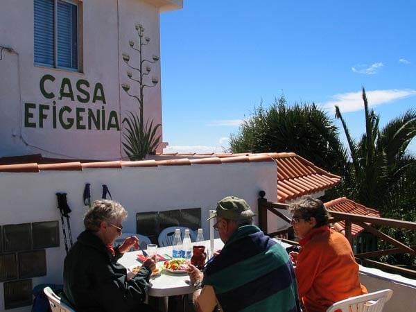
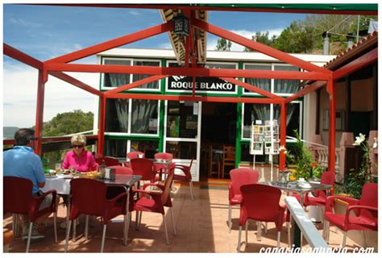
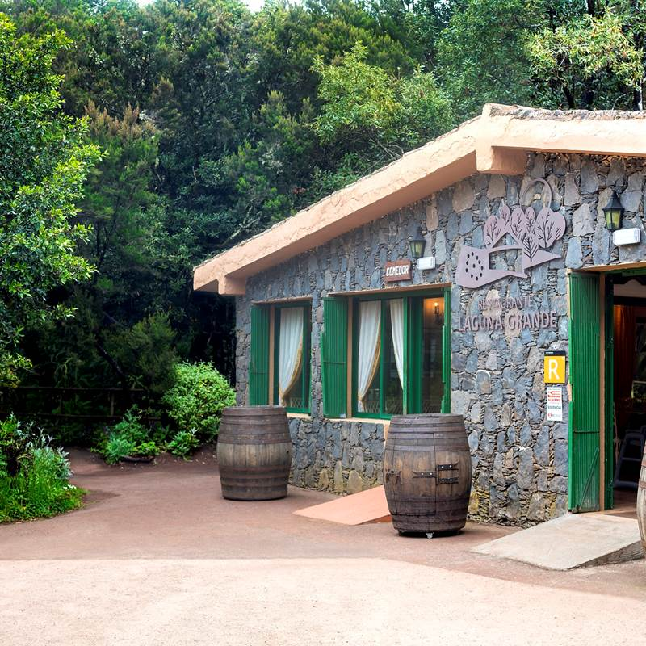

Los mejores restaurantes que puedes visitar

Casa Efigenia
Comida tradicional gomera famoso por su potaje de berros y por ser vegetariano, llevado por la propia Efigenia desde hace muchísimos años.

Roque Blanco
Especialidad en carnes, preciosas vistas al Roque Blanco, se encuentra en Las Rosas.

La Laguna Grande
Este Restaurante es un referente de la cocina tradicional gomera, y punto de paso obligatorio para los que deciden disfrutar de los senderos circulares que comienzan y terminan en la zona de Laguna Grande.